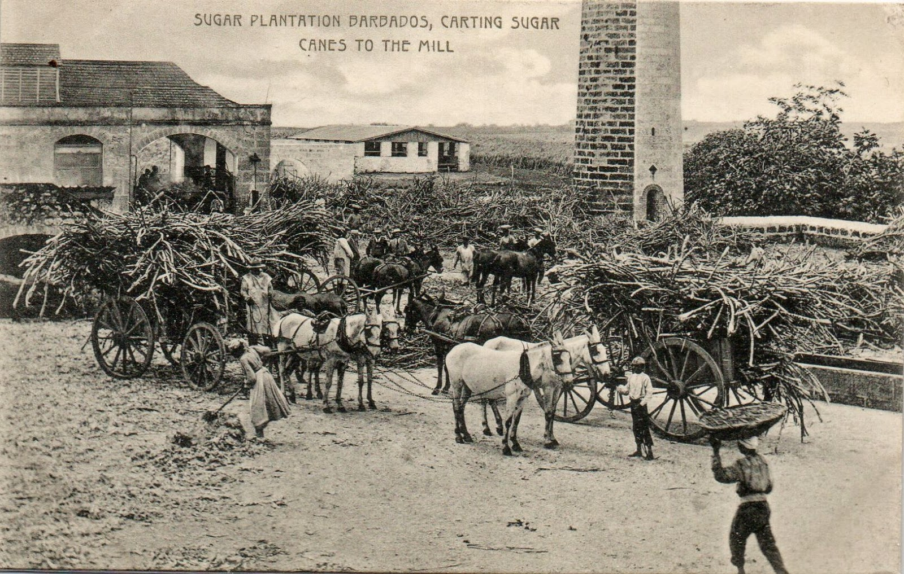
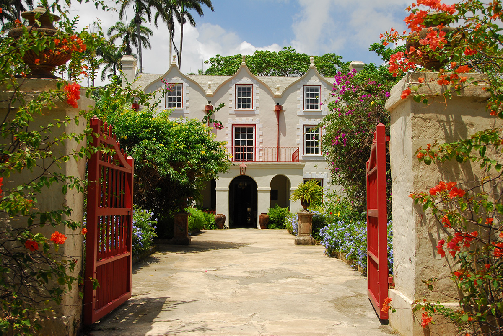
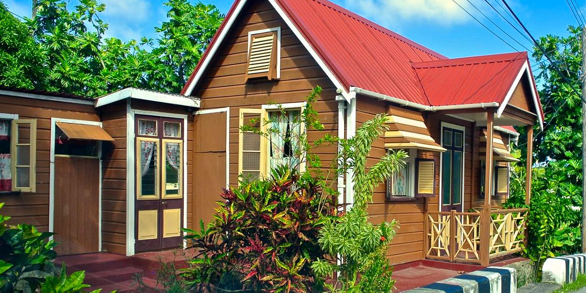
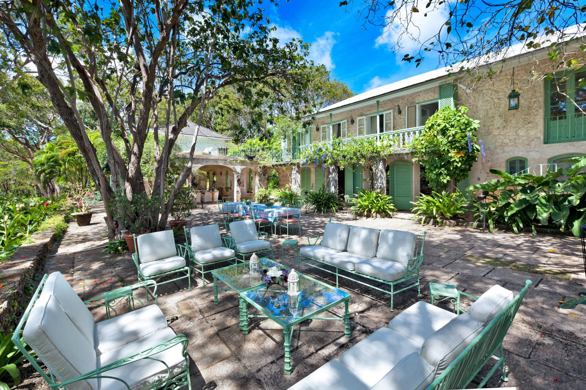
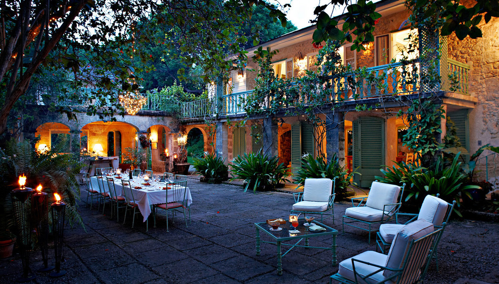
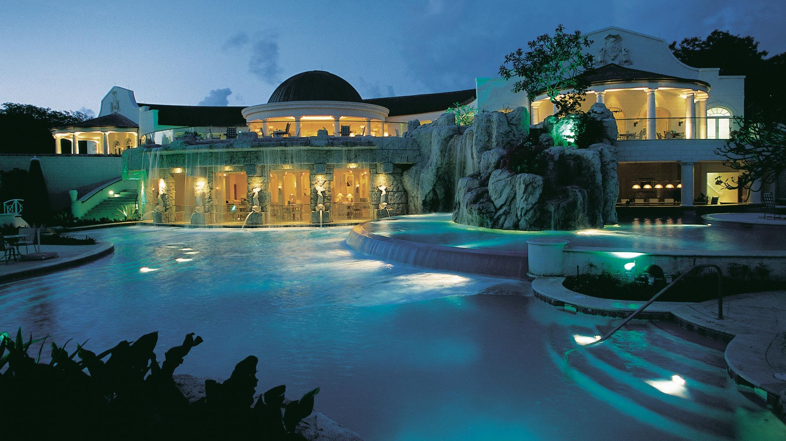

Early History
The Island of Barbadoes. Herman Moll, circa 1720. Image courtesy of Wikimedia Commons, public domain.
To begin to understand the architectural history of Barbados, we must start with its pre-colonial history. The island was first settled by a group of indigenous Americans as early as 2000 BCE, but only small fragments of archaeological evidence from that settlement remain. It was re-settled sometime between 350 and 650 CE by another group, called Saladoid-Barrancoids by archaeologists, who were later joined by several groups of Taíno Arawaks around 800 CE. There is abundant archaeological evidence of this joint civilization's farming techniques, an early hint at the island's agricultural future. However, no remains of any significant built structures have been found. In the 13th century, a group of native Caribs from the neighboring island of St. Vincent invaded, taking control of Barbados. The Caribs remained the dominant culture on Barbados until the early 16th century, when the Spanish Empire began to run slave raids on the island. The raids quickly decimated the island’s population, forcing natives to either flee to more mountainous islands which could more easily be defended or risk capture by the Spanish. By 1541, the Spanish thought the island to be entirely depopulated.
Because the early history of Barbados was so turbulent, little remained of its inhabitants before colonization. There was no existing Barbadian identity, no shared cultural fabric for the island to grow from. The existing population had been entirely wiped out. This created unique circumstances on Barbados; the island had been made into a blank canvas, a region defined solely by its climate and geography. Yet even without a defined local culture, it still produced a distinctive architectural style.
Colonization and the Sugar Trade
Sugar Plantation Barbados, Carting Sugar Canes to the Mill. Postcard, W.L. Johnson & Co., circa 1908. Image via Andrea Kelleher, public domain.
In 1625, Englishman John Powell landed at the island of Barbados during a severe storm while en route to Brazil. He claimed the island in the name of the King, then returned to England to report his findings. Two years later, a ship with 80 settlers landed at Holetown and began to expand. Barbados's relatively flat geography made it ideal terrain for large plantations, and its location as the easternmost of the West Indian isles made it strategically and economically important. The colonists noticed the fertility of the land immediately and began to import slaves to work on farms. Initially, Barbados produced the same export crops as most other islands in that region: indigo, tobacco, and cotton. This quickly proved to be unsustainable, as larger quantities of the same crops were being grown more cheaply in America. Barbados needed an industry, and Pieter Brewer, a Dutchman, had the solution. Around 1640, he attempted to grow sugar on a commercial scale. In 1645 he had success, and the island's first large-scale sugar crop was produced. Sugar was a crop in high demand, and was very well-suited to the Caribbean climate. Unlike cotton, it did not grow well in America. Sugar quickly became the island's only export, with the plantations taking on an almost deified status; Barbados simply could not exist without the sugar mills, and the sugar mills could not exist without slaves. From this time all the way until slavery was outlawed, Barbados was ruled by the “plantocracy”: a group of rich plantation owners who had full control of the local government. The money generated by the sugar trade attracted more and more English colonists looking to earn their fortunes. With them came a desire for sophisticated, trendy architecture. As wealth in Barbados grew, so did the demand for estates which flaunted that wealth.
This is the first instance of what becomes a recurring theme in Barbadian architecture: sugar prices dictating architectural change. Sugar sold very well in the 17th century, and as such the simple homes which had been built by the colonists to support the plantations were replaced with elaborate mansions in the latest English styles. When sugar prices remain stable or fall, the architecture of Barbados remains stagnant. Each new wave of wealth brings with it new buildings.
Colonial Architecture
St. Nicholas Abbey. Architect Benjamin Berringer. Built 1658. Image courtesy of the official St. Nicholas Abbey tourism website.
When Richard Ligon, an Englishman fleeing the English Civil War, arrived at Barbados in 1647, the island was already a bustling colony. The promise of wealth had drawn a wave of English craftsmen just a few years earlier who had already begun to erect elaborate buildings in place of the simple structures constructed by the earliest British settlers. This was the first time architecture — not just building — had been introduced to the island. One example of this wave of creativity is St. Nicholas Abbey, one of the only surviving Jacobean buildings in the Americas. Despite its name, the Abbey has absolutely no connection to the church; it was built as a plantation house and now serves as a museum. The house's curvilinear Dutch gables, covered entryway, and corner chimneys are all extremely faithful to the Jacobean style. This was the style of choice in England at the time, so it was only natural that it would be imported to keep the island up to date with the latest fashions. Ligon, however, denounced this sort of imported architecture. In his book A True and Exact History of the Island of Barbadoes, he wrote:
The planters never consider which way they build their houses, so long as they get them up; which is the cause that many of them are so insufferably hot, as neither themselves or any other can remain in them without sweltering.
Ligon's criticisms were apt. Because the styles and floorplans being imported were designed for the English climate and not the Barbadian, the plantation houses were often unbearably warm. The lack of adaptation struck Ligon as truly absurd; St. Nicholas Abbey, for example, was built with fireplaces and no areas open to the outside air. In response to this architectural failure, Ligon drew up his own original plans for plantation houses which would maximize airflow. The plans became very popular, and many 17th and 18th century Barbadian houses were based off of them. Ligon's home plans mark the first step towards the development of a Barbadian style.
The Architecture of Disaster
“Awful and Destructive Hurricane.” Public Ledger and Newfoundland General Advertiser Sep. 20, 1831. Captured from Google News, public domain.
We have already mentioned the importance of sugar prices as a driving factor in the architectural growth of Barbados, but we have failed to mention another important motivator: hurricanes. Very few of the homes built in the style described by Ligon remain today, mostly as a result of natural disasters. In 1780, a massive hurricane tore through the island, destroying many plantation houses and government buildings. The people of Barbados rebuilt in much the same style, but in 1831 an even worse hurricane swept through and destroyed most of the replacement buildings too. The loss of this architecture is tragic, but it provided Barbados with an unusual opportunity to rebuild many sites all at once. Once again, the island of Barbados became a blank slate for new experiments in architecture.
The effects of this pair of hurricanes on Barbadian architecture were profound. A new awareness and reverence for the dangerous island storms lead to buildings which were much lower and wider than before, with gabled or flat roofs meant to avoid catching wind. The few sites which managed to survive the hurricane became the models for other buildings to work from. Many of these sites were military buildings, which lead to a proliferation of parapets and gabled roofs throughout the island. These changes in proportion and featured elements mixed with popular English architecture, giving rise to a new local style born of disaster: the Caribbean Georgian style.
Developing a Local Style

Villa Nova. Architect Robert Haynes. Built 1834. Captured from Architecture and Design in Barbados. Courtesy of Wordsmith International.
In the late 18th and early 19th centuries, sugar plantations had taken over much of the island, and the forests had all been leveled either by farmers or storms. Thus Barbadian architects turned to local coral stone as a building material in lieu of wood. The stone was abundant, easy to quarry, and soft enough to carve. The stone could be used many different ways; it could be sawn into smooth bricks for detailed construction (seen in Villa Nova, right), chipped into rough blocks for traditional stone-and-mortar walls, or broken off into large slabs for foundations. The walls could be smoothed over with plaster to create an even finish or left rough. Although these techniques for using stone in building were not local, the resulting homes had a uniquely Barbadian flare which came from the pinkish-white hue of the coral stone. To the Barbadian architect, coral stone was like marble but more abundant and easier to work with. The emergence of a local material helped to set the island's architectural imagination free. The shift to coral stone came about right as a confluence of new architectural ideas, increasing capital, and a hurricane swept the island, leading to the style known as Caribbean Georgian.
There was more to the Caribbean Georgian style than just coral stone. It was an important architectural movement, a compromise between fashionable British architecture with the realities of the Barbadian climate. It began with traditional Georgian homes. These were symmetrical buildings, wider than they were tall, with ornament in the Classical style. The buildings were characterized by use of columns and pilasters, strict adherence to mathematically planned proportions, and harmoniously-arranged doors and windows. Because of the English climate, the traditional plans for these houses left them closed off and unable to circulate air well. This was the exact sort of construction Ligon disparaged in A True and Exact History of the Island of Barbadoes. The Caribbean Georgian style augmented these plans with several uniquely Barbadian features, redefining the relationship between the house and the outdoors. The ground floor of the house was wrapped with a large, pleasant porch framed with dramatic archways. This provided outdoor recreation space unavailable in the traditional plans. The grand entry hall, with its characteristic double staircase, became an open, airy space which blurred the line between indoors and outdoors. Balconies, a feature largely ignored or used only for aesthetic purposes in English Georgian homes, became an important way for architects to bring light and air into bedrooms. The windows were given exterior shades to keep the sun out and act as shutters during storms, and Demerara windows (special windows which act as passive air conditioners) proliferated. These changes turned the closed-off English style into a new Barbadian style, a more breathable architecture better suited to the island's climate.
This focus on airflow through the house and pleasant outdoor spaces helped to define a style which was no longer just transplanted English architecture, but an actual local vernacular with its own rules and quirks. The Barbadian lifestyle had come to be defined in relation to the outdoors, and stuffy English architecture no longer served that lifestyle. The style gained widespread popularity on the island following the 1831 hurricane, as the damage done meant that most people needed to rebuild from scratch. The Caribbean Georgian style represents a fusion between the English ideals of architecture at the time and the practical skills of Ligon and other local architects. It is indicative of a willingness to experiment and adapt which fostered the development of the island's future modern movements.
The Architecture of Emancipation
Historic Chattel House. Architect unknown. Image courtesy of the Barbados Tourism Board.
It should not be forgotten that every site we have examined thus far has been a plantation house. The architecture of the plantocracy up to this point was the architecture of Barbados, despite the island's slave population vastly outnumbering its colonial population. This began to change in 1834, when slavery was abolished in Barbados following a massive slave revolt in 1816.
Although slavery had been abolished, plantation owners still owned nearly all the land on the island, forcing the former slaves to rent from them. These rent agreements often took the form of sharecropping, an abusive system by which renters paid their rent by farming the landlord's land. This effectively continued slavery on the island even after it had been outlawed. The difficulties with rent did not stop there. Plantation owners could terminate any rental agreement immediately for any reason, forcing the tenants involved to pick up and move without a moment’s notice. In the face of these oppressive conditions, the people of Barbados came up with a clever and practical solution: the chattel house. These houses, named for a word meaning “moveable property,” shunned the heavy coral stone of the more permanent buildings in favor of lightweight wood imported to the island. The houses were small and not connected to their foundations, allowing them to easily be dismantled, placed into a cart, and rebuilt elsewhere. When a Barbadian was forced to move, they would simply pick up their whole house and put it down somewhere else. This was a unique form of architecture, an innovation born of necessity which had never been seen anywhere else. The chattel house was the first truly unique Barbadian architectural form.
Chattel House. Architect unknown. Image via MyGuide Barbados, licensed for academic use.
The design of the Barbadian chattel house evolved over time. Early examples were defined by pure utilitarianism: small, light homes with little ornament or permanency. They were rectangular, with gabled rooves and windows on all sides. The windows frequently had adjustable wooden shades to provide privacy and keep the sun out while still letting in the breeze, as well as provide privacy in crowded lots. Most chattel houses were built with additional small windows near the peaks of the roof which were designed to draw hot air out. Although some larger houses were split into rooms, most were not divided up in the interior. Despite the simplicity of chattel houses, the number of architectural innovations that can be seen in them is stunning. Barbadian builders explored state-of-the-art materials and building techniques to make their houses lighter and more moveable, exemplifying a focus on using new developments which is reminiscent of the Western modernist movement. Rather than build upon heavy traditional foundations, the Barbadians erected the chattel houses atop flat sheets of coral brick which were not connected to the houses themselves. This freed up the houses to be moved with ease. Their use of wood also showed a willingness to expand beyond what was easily accessible — because the sprawling growth of the plantations had wiped out forests on the island, chattel houses were built using imported wood. Perhaps the most impressive feature of these early chattel houses is the roofing. Chattel houses have used corrugated metal roofing since their first inception. As a roofing material, it is the perfect blend of all things important to a Barbadian chattel house: it's light, highly resistant to rain and wind, and easily detached when needed. It could be hung at sharp angles to create gabled rooves which would deflect storms. The heavy wood and plaster roofs of the neighboring plantation houses would have been impossible to move and reassemble, yet these panels could be taken apart as easily as the rest of the home. Looking back, it seems an obvious choice of material, yet at the time corrugated metal sheets had only existed for around fifteen years. The Barbadian chattel house was remarkably modern in its use of materials and focus on using architecture to solve a problem.
Chattel House. Architect unknown. Image courtesy of Loop Barbados, licensed for academic use.
But that was only the beginning. The houses took on a new architectural life as they became a medium for personal expression. Because of the wet island climate, the corrugated metal rooves tended to corrode, and the cheap wood could even begin to rot. The obvious solution was to paint the houses, sealing in the materials and providing a layer of insulation from the weather without adding more weight the way plaster would. Here the buildings gained a level of personal flair. It quickly became stylish to paint chattel houses with bright, candy-like colors. Patterns of stripes, accentuated moldings, and rooves in contrasting colors emerged as popular motifs. Elaborate detailing also began to appear on the doors of the houses, with unique designs appearing in almost every house. This was a clear symbol of liberation and personal freedom, in many ways an act of rebellion against the unjust plantation owners' abuse of the rental system. Although the plantations owned the land, the Barbadians owned their houses, and they owned them loudly.
As the grip of the plantocracy on the island began to weaken without slavery and the need to move houses became less frequent, chattel houses took on additional ornamental features. Increased permanence meant more Barbadians felt secure enough in their housing situation to build complex structures. Many homeowners began to build additions to their homes, adding on “sheds” with extra rooms or adjoined secondary houses. These additions were often very similar in shape to the main house, and attached through a shared wall or outdoor patio. The facades of the buildings were adorned with locally-developed architectural features such as the bell palmet, a curved hood above the windows which provided extra shade from the heat of the sun. Gardens also became popular for chattel house residents, often adding additional privacy and color to the properties.
Chattel Village Barbados. Judith Milne, circa 1998. Image courtesy of Judith Milne, licensed for academic use.
Although chattel houses are radically different from the Caribbean Georgian mansions which preceded them, we can clearly see that style's influence in several places. Many later chattel houses feature roofed verandahs which mimic the porches and patios of the larger plantation houses. These outdoor spaces represented a new luxury which could now be afforded in chattel houses - open space. As the need to move decreased, it became more reasonable to build parts of the house which were not strictly functional. The trend of borrowing from the plantation houses continued as Barbadian chattel houses began to use Demerara windows and double entrance stairways. Porticoes and small parapets emerged as popular ornaments. The chattel house took on several of the features showcased on larger plantation houses.
The chattel house should be regarded as an incredibly important step in the development of modern architecture in Barbados. Its design was dictated by the functions it had to fulfil, which is a core modernist ideal. The culture of expanding one's house by connecting additional nearly-identical units parallels the modernist focus on modular construction. Chattel houses exploit the inherent properties of their building material, not for structural strength like the Western modernists with reinforced concrete, but for its lightness and deconstructability. In addition, it is housing designed to solve a specific and challenging social problem. Despite its exterior appearance, the architecture of the Chattel house represents modernist ideals in many ways when examined in the context of Barbados's larger architectural history.
The Birth of Island Modern
Fustic House. Architect Oliver Messel. Built 1962. Image courtesy of Barbados Barbados, licensed for academic use.
The “Bajan style” of the chattel house remained the main form of architecture on Barbados for nearly a full century. As the international style swept the globe and Barbados gained its independence, Barbados became the incubation chamber for a new strain of modern architecture – Island Modern. Primarily developed by Oliver Messel, this style combined the abstract tenets and rectilinear forms of the international style with local coral stone and the characteristic colonnades and verandahs of the Caribbean Georgian architecture discussed earlier. Messel also mixed in tricks he had learned as a stage designer, adding features such as cascading archways and brightly-colored accents to the formula. The resulting architecture, exemplified at Fustic House (above) and Mango Bay (below), became the standard for luxury island residences and resorts.
Mango Bay. Architect Oliver Messel. Built 1968. Image courtesy of Caribbean Collection, licensed for academic use.
Island Modern is characterized by openness. The ground floor is composed almost entirely of arches, leaving it open to the island breeze and emulating the light and airy feeling of the international style’s thin walls while still using traditional coral stone. The principle of openness also manifests itself in visual connections; there is often a sightline from the front door all the way through the ground floor to the patio and the beach or garden beyond. The upper floors of the house feature large windows designed to circulate air, and rooms set along open balconies which look down onto the patio. One particularly interesting facet of the Island Modern style is its focus on lighting. External lights on the patio allow the occupants of the house to stay out late into the night, and floodlights beneath trees show off the garden even at night. All of Messel's houses choose a warm lighting palate, with yellow lights to contrast the blue and green accents. The style has a flare for the dramatic, springing from Messel's origins as a stage designer. Island Modern houses often feature long curtains which serve no real purpose other than to billow luxuriously in the breeze. This connects well to the modernist idea of architecture as a presentation; each new space in an Island Modern building flows into the next while presenting an exciting new visual experience. Billowing curtains give way to lush gardens which lead to patios criss-crossed with strings of dazzling lights. The Island Modern style also dictates that gardens and greenery should be incorporated directly into the building, rather than designed and tended to separately as in the earlier Caribbean Georgian homes. The resulting effect is a building which feels as though it is fully integrated with the outdoors around it, a structure in conversation with the island of Barbados.
Fustic house at night. Architect Oliver Messel. Built 1962. Image courtesy of visitbarbados.org, licensed for academic use.
We can think of the Island Modern style as the culmination of Barbados's architectural history. It is a confluence of elements taken from as early as Ligon and as late as van der Rohe. In the earliest Barbadian architecture, we saw traditional Palladian forms adapted to the island climate. This gave us columns, symmetrical massing, and the coral stone wall. Richard Ligon gave us the idea of airflow through the house as an important feature and the first Demerara windows. From the Caribbean Georgian period came a focus on outdoor spaces like patios and terraces, wide entrance stairways, and more uses for arches. The Bajan Vernacular chattel houses brought color, individuality, and storm-resistant roofs. We can see the influences of every single one of these styles in the Island Modern: the coral stone columns and arches of Mango Bay, the outdoor spaces and airy layout of Fustic House, and the colorful accents of both sites. The Island Modern style is the culmination of every architectural period in Barbados.
Conclusion
Sandy Lane Hotel. Designed by Richmond International. Built 2000. Image courtesy of EDSA Planning, licensed for academic use.
Island Modern has come to be the defining style of Barbados. The Barbados tourism board touts the style as a symbol of the island's openness and pleasantness. It has been exported internationally to countless other sites in similar climate regions. Sites like Fustic House have become fashionable destinations for luxury trips. In many ways, this has overshadowed the previous architectural developments in Barbados, but they are no less important than the Island Modern style. In fact, understanding Barbados's earlier architectural trends is crucial to comprehending how it came about. The story of modern architecture in Barbados is the story of an ongoing tension between leaving behind the dark past of slavery and embracing the only architectural heritage the island has. If the history had simply stopped at chattel houses, the narrative would have wrapped up quite nicely. But the return of the plantation house as an aesthetic of luxury, both as it has been adapted into the Island Modern style and as it exists in traditional plantation houses which still stand, reveals this narrative as reductivist and inaccurate. It appears that the central question of Barbadian modern architecture is one of identity. Does the ugly past of Barbados, an island driven by the brutal and abusive colonial slave economy, deserve a place in its architectural language? Or does the story of Barbadian architecture begin at emancipation? The Barbadian government and tourism board are quick to sing the praises of the chattel house as a symbol of Barbados's freedom, but serve countless advertisements for luxury vacations at preserved plantations like Cockade House. In this light, Island Modern can be seen as a compromise: an architecture that represents a reclamation of the slave-driven past of Barbados without sacrificing the new identity the Barbadians forged for themselves after emancipation.
Sources
Beckles, Hilary. A History of Barbados: from Amerindian Settlement to Caribbean single market (second edition). Cambridge (England): Cambridge University Press, 2006.
Button, David & Miller, Keith. Architecture and Design in Barbados. Edgehill (Barbados): Wordsmith International, 2008.
Edwards, Jay D. “The Evolution of Vernacular Architecture in the Western Caribbean.” Cultural Traditions and Caribbean Identity: The Question of Patrimony. Gainesville, FL: Center for Latin American Studies, 1980.
Fraser, Henry & Kiss, Bob. Barbados Chattel Houses. Barbados: Toute Bagai Publishers, 2011.
Fraser, Henry. Treasures of Barbados. London: Macmillan Caribbean, 1985.
Handler, Jerome & Bergman, Stephanie. “Vernacular Houses and Domestic Material Culture on Barbadian Sugar Plantations, 1640-1838.” Journal of Caribbean History 43, no. 1 (2009): 1 – 36.
Jordan, Michael E. Creation of Lifestyle: Architecture. Bloomington: AuthorHouse, 2014.
Ligon, Richard. A True and Exact History of the Island of Barbados. Indianapolis: Hackett Publishing Company, 2011 (originally published 1657).